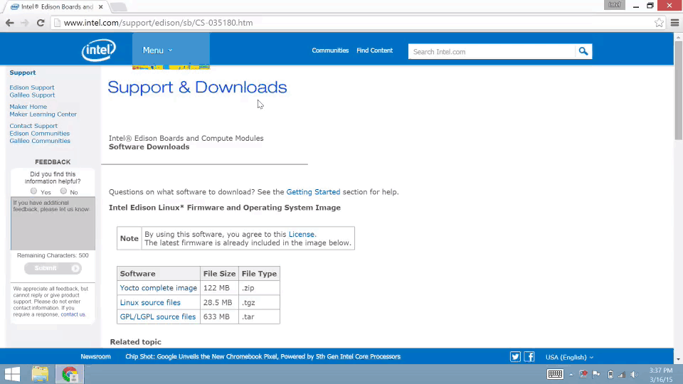

Install Intel® Edison standalone drivers
The Windows standalone drivers for Intel® Edison include several USB drivers in one installer package. These drivers enable important features, such as:
- Composite Device Class (CDC) for programming the board via the Arduino IDE,
- Remote Network Driver Interface Spec (RNDIS) for Ethernet over USB, and
- Device Firmware Upgrade (DFU) for updating firmware on devices.

-
Get the latest Intel® Edison Device USB drivers for Windows installer.
- On the USB key: downloads → Windows
- Copy IntelEdisonDriverSetup[version].exe to your computer.
-
Double-click on the IntelEdisonDriverSetup[version].exe on your computer to begin installation.

-
Follow the installation wizard. Click “Next” where needed. The default settings can be adjusted to your needs if required but you may wish to leave the defaults as is.
-
Click “Finish” to close the installation wizard.